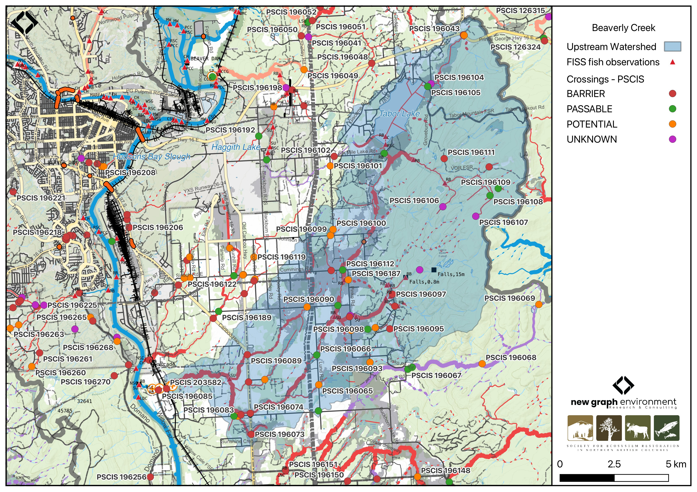
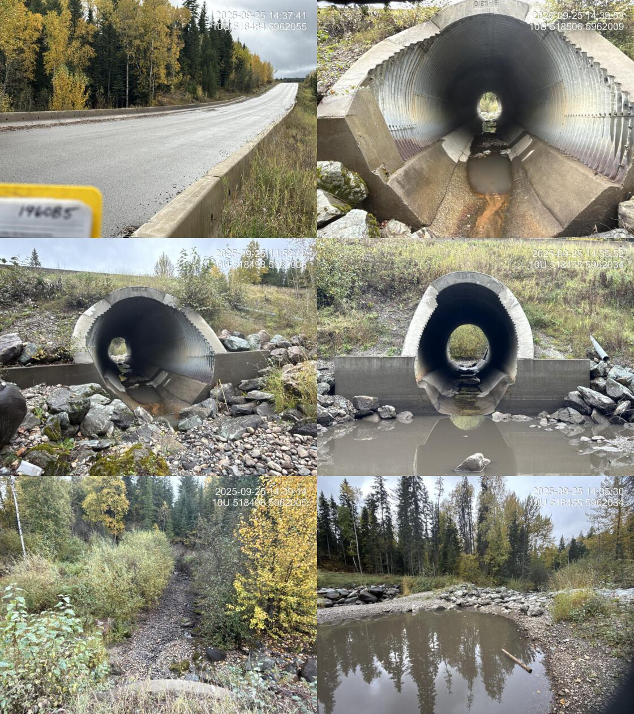
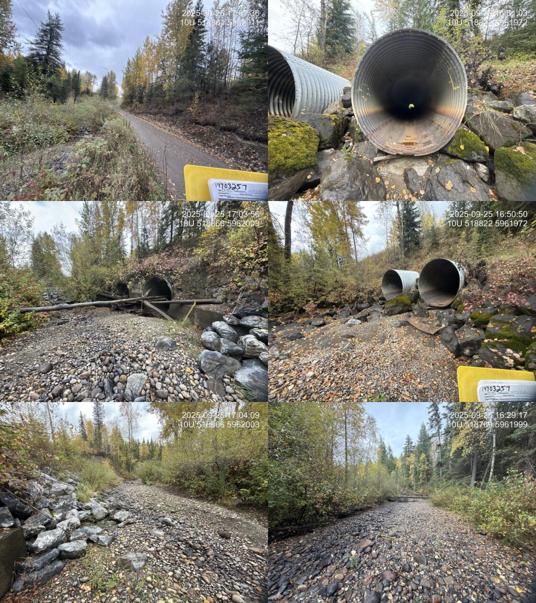
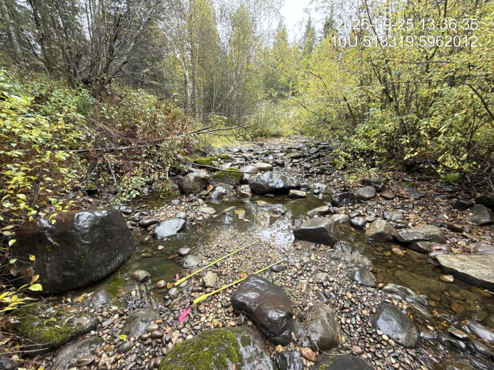
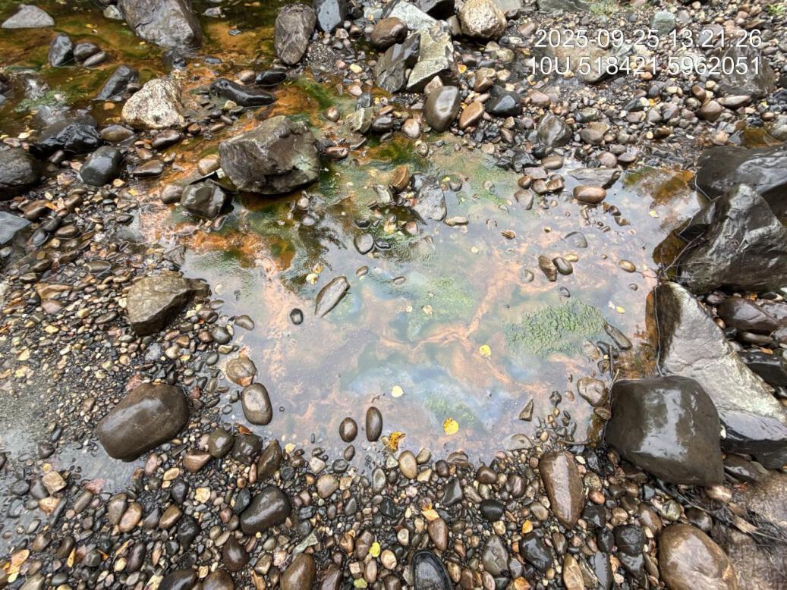
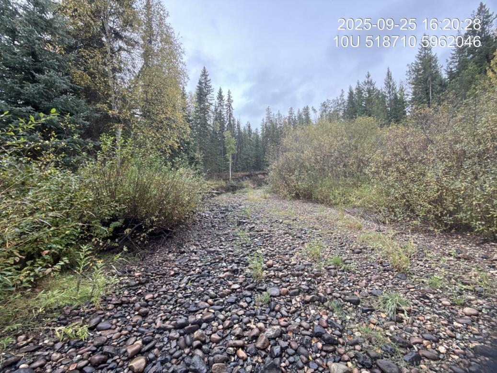
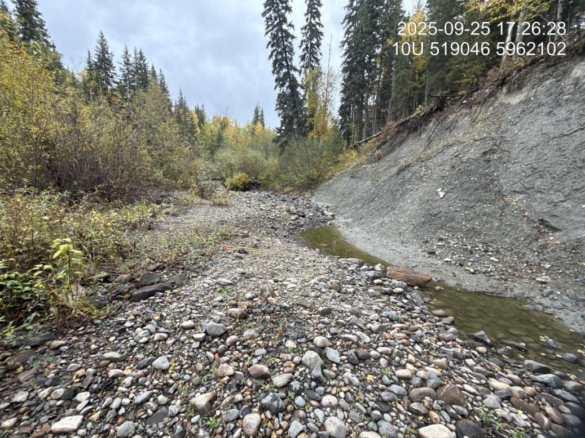

Tabor Creek - 196085 & 203582 - Appendix
Site Location
PSCIS crossings 196085 and 203582 are located on Tabor Creek , approximately 8km south of Prince George, BC, in the Tabor River watershed group (Figure 5.3). Crossing 196085 is located 1.4km upstream Tabor Creek’s confluence with the Fraser River. The crossing is located on Willow-Cale FSR and is the responsibility of the Ministry of Transportation and Infrastructure (chris_culvert_id: 31046). Approximately 400m upstream, crossing 203582 is located on and the responsibility of the CN Railway.

Figure 5.3: Map of Tabor Creek
Background
At the location of these crossings, Tabor Creek is a fifth order stream and drains a watershed of approximately 145.6km2. The watershed ranges in elevation from a maximum of 1254m to 592m near the crossing (Table 5.6).
Crossing 196085 on Willow-Cale FSR was previously assessed in 2014 by Hooft (2015) and ranked as a barrier to fish passage, with medium value habitat documented and fish observed at the time of assessment. Chinook were recorded downstream of the crossing in 2004, and upstream of the crossing sucker (general), longnose sucker, largescale sucker, minnow (general), lake chub, peamouth chub, northern pikeminnow, redside shiner, burbot, stickleback (general), rainbow trout, mountain whitefish, brook trout, and dolly varden have been previously documented (Norris [2018] 2024; MoE 2024). Crossing 203582 on the CN Railway had not been assessed prior to this project. Barrier assessments were completed at both crossings, and a habitat confirmation encompassing both sites was conducted.
A summary of habitat modelling outputs for the crossing are presented in Table 5.7.
fpr::fpr_table_wshd_sum(site_id = my_site) |>
fpr::fpr_kable(caption_text = paste0('Summary of derived upstream watershed statistics for PSCIS crossing ', my_site, '.'),
footnote_text = 'Elev P60 = Elevation at which 60% of the watershed area is above',
scroll = F)| Site | Area Km | Elev Site | Elev Min | Elev Max | Elev Median | Elev P60 | Aspect |
|---|---|---|---|---|---|---|---|
| 196085 | 145.6 | 592 | 558 | 1254 | 703 | 683 | SSW |
| * Elev P60 = Elevation at which 60% of the watershed area is above |
| Habitat | Potential | Remediation Gain | Remediation Gain (%) |
|---|---|---|---|
| BT Rearing (km) | 75.3 | 0.5 | 1 |
| BT Spawning (km) | 33.9 | 0.5 | 1 |
| BT Network (km) | 196.9 | 0.5 | 0 |
| BT Stream (km) | 166.1 | 0.5 | 0 |
| BT Lake Reservoir (ha) | 408.8 | 0.0 | 0 |
| BT Wetland (ha) | 385.0 | 0.0 | 0 |
| BT Slopeclass03 (km) | 74.4 | 0.5 | 1 |
| BT Slopeclass05 (km) | 25.0 | 0.0 | 0 |
| BT Slopeclass08 (km) | 42.9 | 0.0 | 0 |
| BT Slopeclass15 (km) | 21.9 | 0.0 | 0 |
| * Model data is preliminary and subject to adjustments. |
Stream Characteristics at Crossings 196085 and 203582
At the time of the 2025 assessment, both PSCIS crossing 196085 and 203582 on Willow-Cale FSR were un-embedded, non-backwatered and ranked as a barrier to upstream fish passage according to the provincial protocol (MoE 2011) (Tables 5.8 - 5.9). In 2019, work was completed at crossing 196085 on Willow-Cale FSR to backwater the outlet and remove the outlet drop as well as to put baffles within the culvert.
Water temperature was 9\(^\circ\)C, pH was 7.6 and conductivity was 497 uS/cm.
| Location and Stream Data |
|
Crossing Characteristics | – |
|---|---|---|---|
| Date | 2025-09-25 | Crossing Sub Type | Oval Culvert |
| PSCIS ID | 196085 | Diameter (m) | 4 |
| External ID | – | Length (m) | 32 |
| Crew | AI | Embedded | No |
| UTM Zone | 10 | Depth Embedded (m) | – |
| Easting | 518498 | Resemble Channel | No |
| Northing | 5962011 | Backwatered | No |
| Stream | Tabor Creek | Percent Backwatered | – |
| Road | Willow-Cale FSR | Fill Depth (m) | 4 |
| Road Tenure | MoTi | Outlet Drop (m) | 0 |
| Channel Width (m) | 10 | Outlet Pool Depth (m) | 1 |
| Stream Slope (%) | 2.5 | Inlet Drop | No |
| Beaver Activity | No | Slope (%) | 2.5 |
| Habitat Value | Medium | Valley Fill | Deep Fill |
| Final score | 27 | Barrier Result | Barrier |
| Fix type | Replace with New Open Bottom Structure | Fix Span / Diameter | 18 |
| Comments: Work was completed in 2019 to backwater the outlet and remove the outlet drop as well as to put baffles within the culvert. Routine monitoring form also filled out a can be found in accompanying report. eDNA collected in 2025 upstream and downstream of this crossing as well as above the railway crossing upstream, see report for results. | |||
| Photos: From top left clockwise: Road/Site Card, Barrel, Outlet, Downstream, Upstream, Inlet. | |||
|
 |
| Location and Stream Data |
|
Crossing Characteristics | – |
|---|---|---|---|
| Date | 2025-09-25 | Crossing Sub Type | Round Culvert |
| PSCIS ID | 203582 | Diameter (m) | 5.2 |
| External ID | 19703257 | Length (m) | 50 |
| Crew | AI | Embedded | No |
| UTM Zone | 10 | Depth Embedded (m) | – |
| Easting | 518844 | Resemble Channel | – |
| Northing | 5961981 | Backwatered | No |
| Stream | Tabor Creek | Percent Backwatered | – |
| Road | Railway | Fill Depth (m) | 10 |
| Road Tenure | CN Rail | Outlet Drop (m) | 0.3 |
| Channel Width (m) | 10 | Outlet Pool Depth (m) | 1 |
| Stream Slope (%) | 1.5 | Inlet Drop | No |
| Beaver Activity | No | Slope (%) | 0.5 |
| Habitat Value | Medium | Valley Fill | Deep Fill |
| Final score | 32 | Barrier Result | Barrier |
| Fix type | Replace with New Open Bottom Structure | Fix Span / Diameter | 36 |
| Comments: Two pipes at 2.6 m each. Pipes are in decent shape although it appears they had metal skirt sections (previously attached to bottom of pipes) at the outlets that have ripped off. Difficult to determine the size of the outlet drop as the stream was dry at the time of assessment. Culvert also crosses underneath a road and powerline on the east side of the railway | |||
| Photos: From top left clockwise: Road/Site Card, Barrel, Outlet, Downstream, Upstream, Inlet. | |||
|
 |
##this is useful to get some comments for the report
hab_site |>filter(site == my_site & location == 'ds') |>pull(comments)
hab_site |>filter(site == my_site & location == 'us') |>pull(comments)
hab_site |>filter(site == my_site2 & location == 'ds') |>pull(comments)
hab_site |>filter(site == my_site2 & location == 'us') |>pull(comments)Stream Characteristics Downstream of Crossing 196085
The stream was surveyed downstream from crossing 196085 for 350m (Figure 5.4). The stream was flowing, but discharge appeared minimal relative to channel-forming flows. Extensive algae growth near the highway suggested potential nutrient inputs, possibly from the upstream mill site; algae presence decreased farther downstream (Figure 5.5).. Large areas of gravels were present and suitable for chinook and sockeye spawning, contingent on adequate flows during spawning periods. The average channel width was 9.9m, the average wetted width was 3.4m, and the average gradient was 2%.The dominant substrate was boulders with cobbles sub-dominant.Total cover amount was rated as trace with boulders dominant. Cover was also present as undercut banks and instream vegetation. The habitat was rated as medium value.
Stream Characteristics Upstream of Crossing 196085 and Downstream of Crossing 203582
The stream was surveyed upstream from crossing 196085 for 410m , up to crossing 203582 (Figure 5.6). The habitat was rated as medium value. The average channel width was 11m, the average wetted width was 1.9m, and the average gradient was 1.5%.The dominant substrate was gravels with cobbles sub-dominant.Total cover amount was rated as trace with boulders dominant. Cover was also present as undercut banks. The channel was dewatered at the time of assessment with shallow pools present at the downstream end of the site. Gravels were abundant throughout and suitable for chinook and sockeye spawning under adequate flow conditions. Deep pools were likely present when the stream was flowing.
Stream Characteristics Upstream of Crossing 203582
The stream was surveyed upstream from crossing 203582 for 650m (Figure 5.7). The habitat was rated as medium value. The stream was dewatered until approximately 360m upstream of the railway culverts, and the farthest downstream pool contained numerous fry. Upstream, occasional pools transitioned to increasing flow toward the upper end of the site where a continually flowing channel reemerged. The system was extremely large with high flows during freshet based on the size of the substrates. Gravels were abundant throughout, with limited woody debris or in stream cover at low flow, restricted mainly to interstitial spaces between cobbles and boulders. The average channel width was 14.6m, the average wetted width was 2.5m, and the average gradient was 0.8%.Total cover amount was rated as trace with boulders dominant. Cover was also present as undercut banks.The dominant substrate was gravels with cobbles sub-dominant.
##this is useful to get some comments for the report
form_edna |>filter(site == my_site & location == 'ds') |>pull(comments_field)
form_edna |>filter(site == my_site & location == 'ds') |>pull(comments_lab)
form_edna |>filter(site == my_site & location == 'us') |>pull(comments_field)
form_edna |>filter(site == my_site & location == 'us') |>pull(comments_lab)
form_edna |>filter(site == my_site2 & location == 'ds') |>pull(comments_field)
form_edna |>filter(site == my_site2 & location == 'ds') |>pull(comments_lab)
form_edna |>filter(site == my_site2 & location == 'us') |>pull(comments_field)
form_edna |>filter(site == my_site2 & location == 'us') |>pull(comments_lab)Environmental DNA Sampling
One eDNA sample was collected downstream of crossing 196085 on Willow-Cale FSR, and two samples were collected upstream of the crossing in a pool where fish were observed, using different pore sizes. Upstream of the CN railway crossing, two samples were collected using different pore sizes, and the pool sampled contained numerous fry. Sampling techniques are summarized in Table 5.10.
my_caption <- paste0("Summary of eDNA samples collected at sites ", my_site, " and ", my_site2, ".")
tab_edna |>
dplyr::filter(site %in% c(my_site, my_site2)) |>
dplyr::select(-site) |>
dplyr::arrange(Site) |>
fpr::fpr_kable(caption_text = my_caption, scroll = FALSE)| Site | Stream | Habitat Type | Sample Method | Filter Type | Filter Size (um) | Volume filtered (L) | Site Description |
|---|---|---|---|---|---|---|---|
| 196085_ds_ed1 | Tabor Creek | riffle | grab | mce | 1.0 | – | Sample collected approximately 400m downstream with culvert on left bank at pool Inlet. |
| 196085_us_ed1a | Tabor Creek | pool | instream | mce | 1.0 | 1.0 | Sample collected 30m upstream of FSR/culvert inlet on the right bank. |
| 196085_us_ed1b | Tabor Creek | pool | grab | mce | 1.5 | 1.0 | Sample collected 30m upstream of FSR/culvert inlet on the right bank. |
| 203582_us_ed1a | Tabor Creek | pool | grab | mce | 1.0 | 0.5 | Sample collected 360m upstream of the railway culverts. Sampled from right bank. Site is adjacent to large slumping clay bank. There are numerous fish in this first pool since extensive dewatering which started just above the Forest service road. |
| 203582_us_ed1b | Tabor Creek | pool | grab | mce | 1.5 | 0.8 | Sample collected 360m upstream of the railway culverts. Sampled from right bank. Site is adjacent to large slumping clay bank. There are numerous fish in this first pool since extensive dewatering which started just above the Forest service road. |
Structure Remediation and Cost Estimate
Should restoration/maintenance activities proceed, replacement of the Willow-Cale FSR crossing (196085) with a bridge (18m span) is recommended. At the time of reporting in 2025, the cost of the work is estimated at $3,600,000.
Should restoration/maintenance activities proceed at the CN Railway crossing (203582) replacement with a bridge (36 m span) is recommended. At the time of reporting in 2025, the cost of the work is estimated at $27,000,000.
Conclusion
Tabor Creek provided medium value habitat for salmonid spawning and rearing, with chinook documented downstream of the Willow-Cale FSR crossing. Due to previous remediation work completed at this site, the crossing is ranked as a moderate priority for replacement. The upstream crossing on the CN Railway is ranked as a moderate priority for replacement due to a 0.3m outlet drop. Replacement would be costly because the structure is located on the railway, and the stream exhibited sections of dewatering above Willow-Cale FSR; however, flow was regained upstream and evidence of high flows was observed. Both crossings are situated near the Fraser River and are in close proximity to the City of Prince George, offering opportunities for community engagement.
tab_hab_summary |>
dplyr::filter(Site %in% c(my_site, my_site2)) |>
fpr::fpr_kable(caption_text = paste0("Summary of habitat details for PSCIS crossings ", my_site, " and ", my_site2, "."),
scroll = F) | Site | Location | Length Surveyed (m) | Average Channel Width (m) | Average Wetted Width (m) | Average Pool Depth (m) | Average Gradient (%) | Total Cover | Habitat Value |
|---|---|---|---|---|---|---|---|---|
| 196085 | Downstream | 350 | 9.9 | 3.4 | 0.2 | 2.0 | trace | medium |
| 196085 | Upstream | 410 | 11.0 | 1.9 | – | 1.5 | trace | medium |
| 203582 | Upstream | 650 | 14.6 | 2.5 | – | 0.8 | trace | medium |
my_photo1 = fpr::fpr_photo_pull_by_str(str_to_pull = 'ds_typical_2_')
my_caption1 = paste0('Typical habitat downstream of PSCIS crossing ', my_site, '.')
Figure 5.4: Typical habitat downstream of PSCIS crossing 196085.
my_photo2 = fpr::fpr_photo_pull_by_str(str_to_pull = 'ds_algaenearroad')
my_caption2 = paste0('Algae observed dowstream of crossing ', my_site, '.')
Figure 5.5: Algae observed dowstream of crossing 196085.
my_caption <- paste0('Left: ', my_caption1, ' Right: ', my_caption2)
knitr::include_graphics(my_photo1)
knitr::include_graphics("fig/pixel.png")
knitr::include_graphics(my_photo2)my_photo1 = fpr::fpr_photo_pull_by_str(str_to_pull = 'us_typical_1_')
my_caption1 = paste0('Typical habitat upstream of PSCIS crossing ', my_site, ' and downstream of PSCIS crossing ', my_site2, '.')
Figure 5.6: Typical habitat upstream of PSCIS crossing 196085 and downstream of PSCIS crossing 203582.
my_photo2 = fpr::fpr_photo_pull_by_str(site = my_site2, str_to_pull = 'us_typical_2_')
my_caption2 = paste0('Typical habitat upstream of PSCIS crossing ', my_site2, '.')
Figure 5.7: Typical habitat upstream of PSCIS crossing 203582.
my_caption <- paste0('Left: ', my_caption1, ' Right: ', my_caption2)
knitr::include_graphics(my_photo1)
knitr::include_graphics("fig/pixel.png")
knitr::include_graphics(my_photo2)